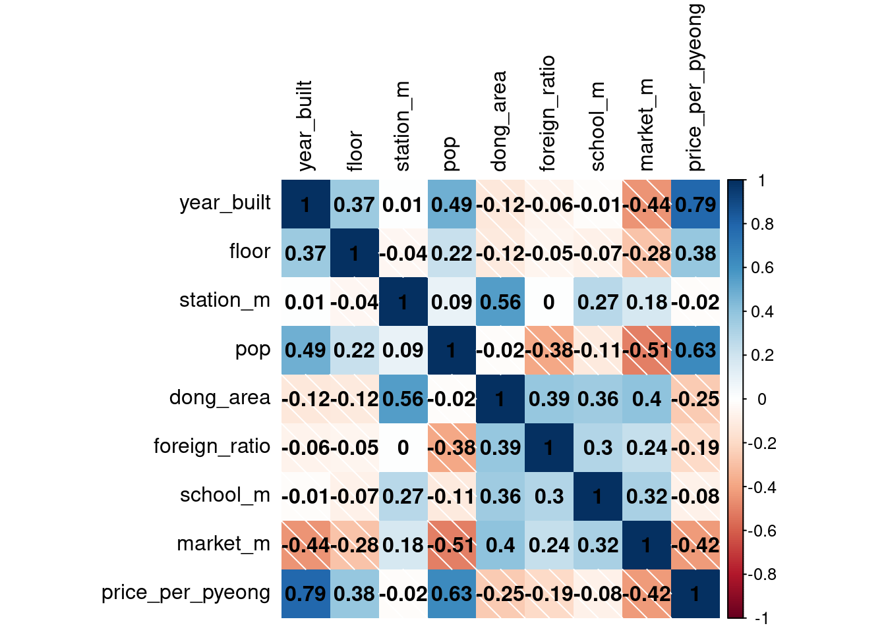
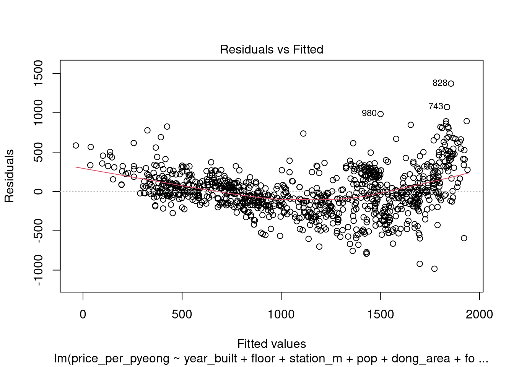
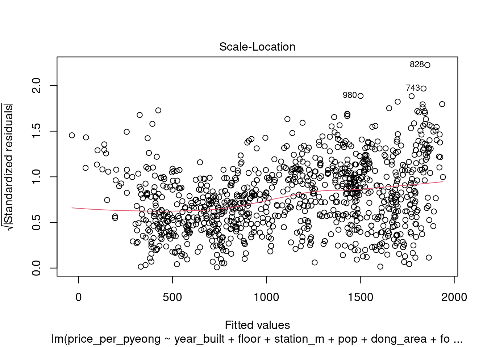
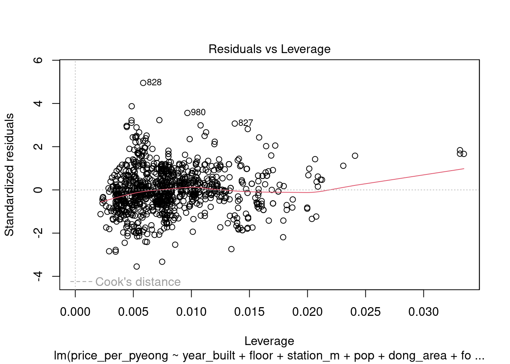
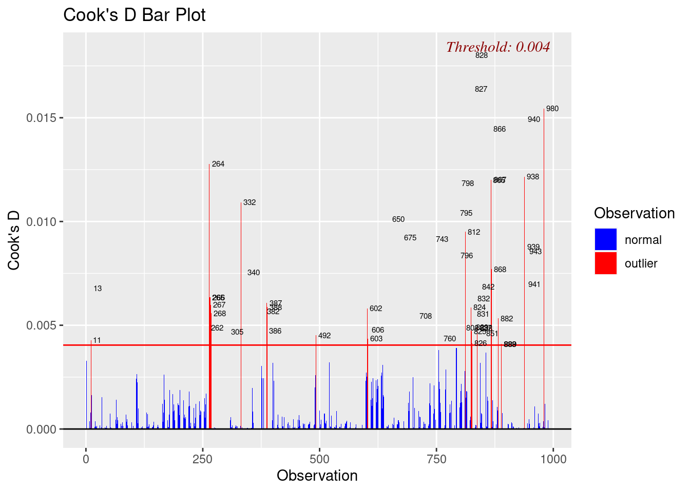
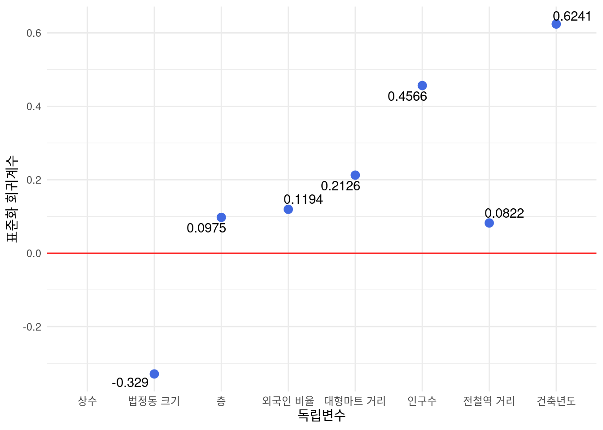

#update.packages(ask = FALSE, checkBuilt = TRUE)
#install.packages("xfun")천안시 아파트 매매가 회귀분석
R
선형회귀 (2023-1)
패키지 로드
rm(list = ls())
library(readxl)
library(tidyverse)── Attaching core tidyverse packages ──────────────────────── tidyverse 2.0.0 ──
✔ dplyr 1.1.2 ✔ readr 2.1.4
✔ forcats 1.0.0 ✔ stringr 1.5.0
✔ ggplot2 3.4.2 ✔ tibble 3.2.1
✔ lubridate 1.9.2 ✔ tidyr 1.3.0
✔ purrr 1.0.1
── Conflicts ────────────────────────────────────────── tidyverse_conflicts() ──
✖ dplyr::filter() masks stats::filter()
✖ dplyr::lag() masks stats::lag()
ℹ Use the conflicted package (<http://conflicted.r-lib.org/>) to force all conflicts to become errorslibrary(car)필요한 패키지를 로딩중입니다: carData
다음의 패키지를 부착합니다: 'car'
The following object is masked from 'package:dplyr':
recode
The following object is masked from 'package:purrr':
somelibrary(corrplot)corrplot 0.92 loadedlibrary(plotly)
다음의 패키지를 부착합니다: 'plotly'
The following object is masked from 'package:ggplot2':
last_plot
The following object is masked from 'package:stats':
filter
The following object is masked from 'package:graphics':
layoutlibrary(olsrr)
다음의 패키지를 부착합니다: 'olsrr'
The following object is masked from 'package:datasets':
riverslibrary(ggrepel)천안시 아파트 매매가 분석
목적
- 아파트 매매, 가격결정에 관한 유용한 인사이트 획득
데이터
활용 데이터는 2022-12월부터, 2023-01 까지의 천안시 아파트 매매내역 1059건이다.
아파트명, 전용면적, 거래금액, 건축년도, 층, 근처 역, 인구수, 크기, 외국인 비율, 초등학교 거리로 구성되어 있다.
전처리
위도, 경도 데이터 제거
컬럼명 영문 변환
data <- read_excel("~/Sungil_LAB/linear_model_dataset.xlsx")
data <- data %>% select(-c(Latitude,Longitude))
names(data) <- c("year_built","floor","station_m","pop","dong_area","foreign_ratio","school_m","market_m","price_per_pyeong")| 한 | 영 |
|---|---|
| 건축년도 | year_built |
| 층 | floor |
| 근처 역까지의 거리 | station_m |
| 법정동 인구수 | pop |
| 법정동크기 | dong_area |
| 외국인 비율 | foreign_ratio |
| 근처 초등학교까지의 거리 | school_m |
| 근처 마트까지의 거리 | market_m |
| 평당 금액 | price_per_pyeong |
data %>% head()# A tibble: 6 × 9
year_built floor station_m pop dong_area foreign_ratio school_m market_m
<dbl> <dbl> <dbl> <dbl> <dbl> <dbl> <dbl> <dbl>
1 2015 9 324. 8191 0.61 0.0603 478. 1198
2 2015 9 324. 8191 0.61 0.0603 478. 1198
3 2015 9 324. 8191 0.61 0.0603 478. 1198
4 2022 20 451. 8191 0.61 0.0603 460. 1149
5 2022 12 451. 8191 0.61 0.0603 460. 1149
6 2022 11 451. 8191 0.61 0.0603 460. 1149
# ℹ 1 more variable: price_per_pyeong <dbl>이상치 확인
박스플롯
층, 전철역 거리, 법정동크기, 초등학교 거리, 대형마트의 거리 변수의 이상치가 많고 뭉쳐있는걸 확인할 수있음
이상치가 있는 독립변수들을 로그변환한 결과 이상치가 줄어듬
Outlier 70건 제거
data <- data %>% mutate(floor = floor %>% log(),
station_m = station_m %>% log(),
dong_area = dong_area %>% log(),
school_m = school_m %>% log(),
market_m = market_m %>% log())
data <- data %>%
filter(station_m>5.5&station_m<9.375) %>%
filter(floor>-0.139) %>%
filter(foreign_ratio<0.1176) %>%
filter(school_m<7.607) %>%
filter(market_m>4.66 & market_m<9.009)상관행렬
data_cor <- cor(data)
data_cor year_built floor station_m pop dong_area
year_built 1.000000000 0.36861613 0.008798964 0.48743016 -0.12096269
floor 0.368616127 1.00000000 -0.042935596 0.22219497 -0.11654329
station_m 0.008798964 -0.04293560 1.000000000 0.09491796 0.55525138
pop 0.487430164 0.22219497 0.094917964 1.00000000 -0.01967819
dong_area -0.120962689 -0.11654329 0.555251378 -0.01967819 1.00000000
foreign_ratio -0.064676692 -0.05008170 0.001685205 -0.38236764 0.38510073
school_m -0.010043271 -0.07108195 0.271737273 -0.11386670 0.35683852
market_m -0.444229582 -0.28400512 0.177691898 -0.50896731 0.40061845
price_per_pyeong 0.787452386 0.38437866 -0.019798398 0.63206041 -0.25067183
foreign_ratio school_m market_m price_per_pyeong
year_built -0.064676692 -0.01004327 -0.4442296 0.78745239
floor -0.050081700 -0.07108195 -0.2840051 0.38437866
station_m 0.001685205 0.27173727 0.1776919 -0.01979840
pop -0.382367642 -0.11386670 -0.5089673 0.63206041
dong_area 0.385100726 0.35683852 0.4006185 -0.25067183
foreign_ratio 1.000000000 0.29844999 0.2365821 -0.19486466
school_m 0.298449991 1.00000000 0.3200577 -0.07806446
market_m 0.236582096 0.32005775 1.0000000 -0.42468714
price_per_pyeong -0.194864664 -0.07806446 -0.4246871 1.00000000corrplot(data_cor,
method = "shade",
addCoef.col="black",
tl.col = "black")
선형회귀 모델
다중선형회귀 모델
model <- lm(price_per_pyeong ~ ., data = data)
summary(model)
Call:
lm(formula = price_per_pyeong ~ ., data = data)
Residuals:
Min 1Q Median 3Q Max
-979.18 -156.49 -10.74 148.06 1374.58
Coefficients:
Estimate Std. Error t value Pr(>|t|)
(Intercept) -6.814e+04 2.287e+03 -29.792 < 2e-16 ***
year_built 3.369e+01 1.145e+00 29.428 < 2e-16 ***
floor 6.146e+01 1.141e+01 5.386 9.03e-08 ***
station_m 5.885e+01 1.471e+01 4.000 6.82e-05 ***
pop 1.356e-02 7.012e-04 19.340 < 2e-16 ***
dong_area -1.608e+02 1.250e+01 -12.870 < 2e-16 ***
foreign_ratio 1.608e+03 3.473e+02 4.630 4.16e-06 ***
school_m -1.137e+01 1.654e+01 -0.687 0.492
market_m 1.199e+02 1.515e+01 7.916 6.63e-15 ***
---
Signif. codes: 0 '***' 0.001 '**' 0.01 '*' 0.05 '.' 0.1 ' ' 1
Residual standard error: 277.9 on 980 degrees of freedom
Multiple R-squared: 0.7565, Adjusted R-squared: 0.7545
F-statistic: 380.6 on 8 and 980 DF, p-value: < 2.2e-16초등학교까지의 거리의 p-value가 0.05 보다 크므로 유의하지 않다고 볼 수 있다.
R-squred 값이 0.7565으로 독립변수들이 종속변수(평당 금액)을 76% 정도 설명할 수 있음을 의미함
VIF (분산팽창계수)
model %>% vif() year_built floor station_m pop dong_area
1.599917 1.183459 1.619763 2.037188 2.283779
foreign_ratio school_m market_m
1.679231 1.291166 1.939407 - VIF값이 10 이상인 변수가 없는걸로 보아 다중공선성이 없는 것으로 판단됨
변수선택
Stepwise selection (단계적 선택법)
model_2 <- step(model,direction = "both")Start: AIC=11139.64
price_per_pyeong ~ year_built + floor + station_m + pop + dong_area +
foreign_ratio + school_m + market_m
Df Sum of Sq RSS AIC
- school_m 1 36469 75717165 11138
<none> 75680696 11140
- station_m 1 1235310 76916006 11154
- foreign_ratio 1 1655169 77335865 11159
- floor 1 2240128 77920824 11166
- market_m 1 4838695 80519391 11199
- dong_area 1 12790706 88471402 11292
- pop 1 28884594 104565290 11457
- year_built 1 66879023 142559719 11764
Step: AIC=11138.12
price_per_pyeong ~ year_built + floor + station_m + pop + dong_area +
foreign_ratio + market_m
Df Sum of Sq RSS AIC
<none> 75717165 11138
+ school_m 1 36469 75680696 11140
- station_m 1 1199157 76916322 11152
- foreign_ratio 1 1623235 77340400 11157
- floor 1 2252594 77969759 11165
- market_m 1 4899147 80616312 11198
- dong_area 1 12908715 88625880 11292
- pop 1 28848133 104565298 11455
- year_built 1 67327710 143044875 11765AIC 값으로 초등학교까지의 거리(school_m) 변수가 제거되었다.
model_2 %>% summary()
Call:
lm(formula = price_per_pyeong ~ year_built + floor + station_m +
pop + dong_area + foreign_ratio + market_m, data = data)
Residuals:
Min 1Q Median 3Q Max
-982.6 -160.5 -14.2 148.1 1371.4
Coefficients:
Estimate Std. Error t value Pr(>|t|)
(Intercept) -6.800e+04 2.278e+03 -29.849 < 2e-16 ***
year_built 3.360e+01 1.138e+00 29.535 < 2e-16 ***
floor 6.162e+01 1.141e+01 5.402 8.26e-08 ***
station_m 5.727e+01 1.453e+01 3.942 8.67e-05 ***
pop 1.354e-02 7.006e-04 19.333 < 2e-16 ***
dong_area -1.613e+02 1.247e+01 -12.932 < 2e-16 ***
foreign_ratio 1.560e+03 3.402e+02 4.586 5.10e-06 ***
market_m 1.176e+02 1.476e+01 7.967 4.49e-15 ***
---
Signif. codes: 0 '***' 0.001 '**' 0.01 '*' 0.05 '.' 0.1 ' ' 1
Residual standard error: 277.8 on 981 degrees of freedom
Multiple R-squared: 0.7564, Adjusted R-squared: 0.7547
F-statistic: 435.2 on 7 and 981 DF, p-value: < 2.2e-16회귀진단
plot(model_2)



ols_plot_cooksd_bar(model_2)
Outlier 관측치 37건을 제거한 모델
cooked_dist <- cooks.distance(model_2)
data_2 <- data %>%
cbind(cooked_dist) %>%
filter(cooked_dist<0.005)
model_3 <- lm(price_per_pyeong ~ year_built+floor+pop+dong_area+station_m+foreign_ratio+school_m+market_m , data=data_2)
model_3 <- step(model_3,direction = "both")Start: AIC=10482.23
price_per_pyeong ~ year_built + floor + pop + dong_area + station_m +
foreign_ratio + school_m + market_m
Df Sum of Sq RSS AIC
- school_m 1 29283 56566077 10481
<none> 56536794 10482
- station_m 1 1222622 57759416 10501
- floor 1 2230901 58767696 10517
- foreign_ratio 1 2448685 58985479 10521
- market_m 1 6013763 62550557 10576
- dong_area 1 12614591 69151385 10672
- pop 1 27421249 83958043 10857
- year_built 1 69040014 125576808 11240
Step: AIC=10480.72
price_per_pyeong ~ year_built + floor + pop + dong_area + station_m +
foreign_ratio + market_m
Df Sum of Sq RSS AIC
<none> 56566077 10481
+ school_m 1 29283 56536794 10482
- station_m 1 1193424 57759501 10499
- floor 1 2242828 58808905 10516
- foreign_ratio 1 2434488 59000565 10519
- market_m 1 6082380 62648457 10576
- dong_area 1 12765427 69331504 10672
- pop 1 27394726 83960804 10855
- year_built 1 69484688 126050766 11242model_3 %>% summary()
Call:
lm(formula = price_per_pyeong ~ year_built + floor + pop + dong_area +
station_m + foreign_ratio + market_m, data = data_2)
Residuals:
Min 1Q Median 3Q Max
-772.07 -145.82 -8.12 147.76 828.28
Coefficients:
Estimate Std. Error t value Pr(>|t|)
(Intercept) -7.092e+04 2.058e+03 -34.468 < 2e-16 ***
year_built 3.494e+01 1.026e+00 34.053 < 2e-16 ***
floor 6.388e+01 1.044e+01 6.118 1.39e-09 ***
pop 1.398e-02 6.539e-04 21.382 < 2e-16 ***
dong_area -1.680e+02 1.151e+01 -14.596 < 2e-16 ***
station_m 5.857e+01 1.313e+01 4.463 9.07e-06 ***
foreign_ratio 1.971e+03 3.093e+02 6.374 2.88e-10 ***
market_m 1.453e+02 1.442e+01 10.075 < 2e-16 ***
---
Signif. codes: 0 '***' 0.001 '**' 0.01 '*' 0.05 '.' 0.1 ' ' 1
Residual standard error: 244.8 on 944 degrees of freedom
Multiple R-squared: 0.7991, Adjusted R-squared: 0.7976
F-statistic: 536.3 on 7 and 944 DF, p-value: < 2.2e-16| 변수 | Estimate | Std. Error | t value | Pr(> |
|---|---|---|---|---|
| Intercept | -7.092e+04 | 2.058e+03 | -34.468 | < 2e-16 *** |
| year_built | 3.494e+01 | 1.026e+00 | 34.053 | < 2e-16 *** |
| floor | 6.388e+01 | 1.044e+01 | 6.118 | 1.39e-09 *** |
| pop | 1.398e-02 | 6.539e-04 | 21.382 | < 2e-16 *** |
| dong_area | -1.680e+02 | 1.151e+01 | -14.596 | < 2e-16 *** |
| station_m | 5.857e+01 | 1.313e+01 | 4.463 | 9.07e-06 *** |
| foreign_ratio | 1.971e+03 | 3.093e+02 | 6.374 | 2.88e-10 *** |
| market_m | 1.453e+02 | 1.442e+01 | 10.075 | < 2e-16 *** |
R-squared값이 0.7564 -> 0.7991로 향상됨을 볼 수 있다.
따라서 회귀식은
평당거래액=건축년도x1 +층x2 +인구수x3+법정동크기x4 +외국인비율x5 +대형마트 거리x6 + e 로 결정
표준화 회귀계수
library(lm.beta)
std_model_3 <- lm.beta(model_3)
std_model_3 %>% summary()
Call:
lm(formula = price_per_pyeong ~ year_built + floor + pop + dong_area +
station_m + foreign_ratio + market_m, data = data_2)
Residuals:
Min 1Q Median 3Q Max
-772.07 -145.82 -8.12 147.76 828.28
Coefficients:
Estimate Standardized Std. Error t value Pr(>|t|)
(Intercept) -7.092e+04 NA 2.058e+03 -34.468 < 2e-16 ***
year_built 3.494e+01 6.241e-01 1.026e+00 34.053 < 2e-16 ***
floor 6.388e+01 9.752e-02 1.044e+01 6.118 1.39e-09 ***
pop 1.398e-02 4.566e-01 6.539e-04 21.382 < 2e-16 ***
dong_area -1.680e+02 -3.290e-01 1.151e+01 -14.596 < 2e-16 ***
station_m 5.857e+01 8.220e-02 1.313e+01 4.463 9.07e-06 ***
foreign_ratio 1.971e+03 1.194e-01 3.093e+02 6.374 2.88e-10 ***
market_m 1.453e+02 2.126e-01 1.442e+01 10.075 < 2e-16 ***
---
Signif. codes: 0 '***' 0.001 '**' 0.01 '*' 0.05 '.' 0.1 ' ' 1
Residual standard error: 244.8 on 944 degrees of freedom
Multiple R-squared: 0.7991, Adjusted R-squared: 0.7976
F-statistic: 536.3 on 7 and 944 DF, p-value: < 2.2e-16표준화 회귀계수를 데이터프레임으로
std_coef <- std_model_3$standardized.coefficients %>%
data.frame() %>%
rownames_to_column()
colnames(std_coef) <- c("독립변수","표준화 회귀계수")
std_coef$`표준화 회귀계수` <- round(std_coef$`표준화 회귀계수`,digits = 4)
std_coef 독립변수 표준화 회귀계수
1 (Intercept) NA
2 year_built 0.6241
3 floor 0.0975
4 pop 0.4566
5 dong_area -0.3290
6 station_m 0.0822
7 foreign_ratio 0.1194
8 market_m 0.2126std_coef %>% ggplot(aes(x=독립변수,y=`표준화 회귀계수`))+
geom_point(size = 3,na.rm = TRUE,color = "royalblue")+
geom_text_repel(aes(label = `표준화 회귀계수`),
na.rm = TRUE)+
geom_hline(yintercept = 0,color = "red")+
scale_x_discrete(label=c("상수","법정동 크기","층","외국인 비율","대형마트 거리","인구수","전철역 거리","건축년도"))+
theme_minimal()
결론
법정동 크기가 커질수록 평균거래액은 낮아짐
- 법정동은 인구수가 많아질수록 분할되기 때문에 법정동 크기가 큰 관측치는 교외지역이라서 집값이 떨어진다고 볼 수 있다.
건축년도가 예상보다 영향이 많음
층은 너무 저층이거나 고층일때 비선호되기에, 변수변환이 필요하다고 봄
-70920 + 34.94 * 2009 + 63.88 * log(11) + 0.01398 * 40187 - 168.0 * log(4.49) + 58.57 * log(2300)+ 1971 * 0.01 + 145.3 * log(699) [1] 1161.886